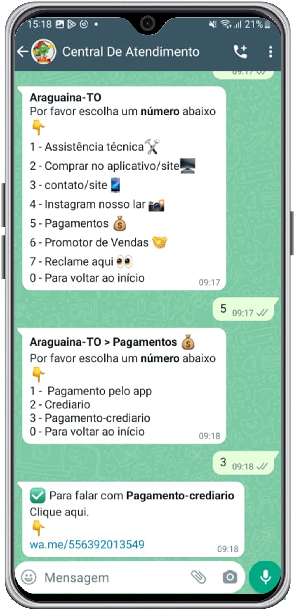
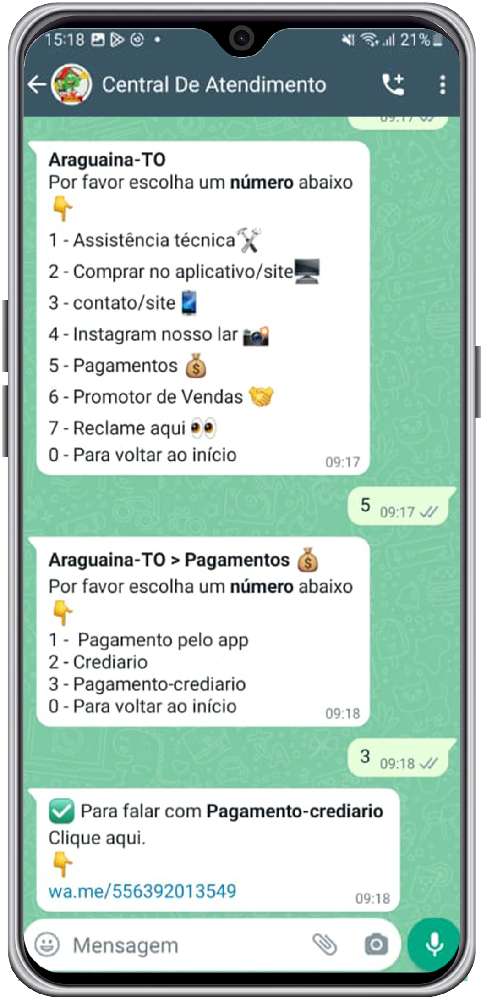

FAQ Perguntas Frequentes
O que é Central de Atendimento?
É um canal de atendimento pelo WhatsApp com sistema robotizado programado. A Central de atendimento centraliza os contatos de todas as lojas do grupo Nosso Lar, fornecendo o contato de cada departamento e direcionando os clientes aos canais corretos, por exemplo:
• SAC: Serviço de Atendimento ao Consumidor como reclamações, elogios e dúvidas sobre compras realizadas na loja física
• Assistência Técnica: Produtos com defeito
• Promotor de vendas: Vendedores
• Crediário: Crédito e cobrança como negociação de débitos etc
• Site: Dúvidas sobre pedido, entrega, troca e devolução etc
- Como acessar a Central de Atendimento?
Clique aqui para acessar a Central de Atendimento. Ao clicar no link, você deverá seguir os comandos digitando somente números. A central não entende áudios, mensagens ou ligações. Ela é automática e você deve digitar apenas o número da opção desejada.
- Como falar com um vendedor da loja mais próxima?
Clique aqui para acessar a Central de Atendimento, escolha a cidade da filial que deseja falar (digitando número ), clique na opção promotor de vendas(digitando numero 6), irá aparecer a opção do departamento, se desejar falar sobre compra de móveis ou de celulares, digite o número correspondente e ficará disponível as opções com nomes de todos vendedores dessa filial, por último escolha o vendedor digitando o número correspondente e clique no link que ira direcionar para o whatsapp do vendedor.
Veja o exemplo:


- Como falar com o crediário?
Basta acessar a central de atendimento, seguir os comandos escolhendo a opção 5 (pagamentos).
Veja o exemplo:
 

Obs: A equipe do crediário trata assuntos relacionados à: pagamento de parcelas, negociação de débitos e cobrança. Referente a compras pelo crediário da loja os vendedores que fazem o atendimento ao cliente.
Como comprar pelo site
- Qual endereço do site das Lojas Nosso Lar?
Comprar conosco é simples, rápido e fácil, acesse: www.lojasnossolar.com.br
- Comprar no site das Lojas Nosso Lar é seguro?
Comprar conosco é simples, seguro e fácil. Fique tranquilo, trabalhamos com a melhor e maior segurança de dados atualmente disponível no mercado. Todas as informações são codificadas (criptografadas), armazenadas com segurança e respeitam a todo instante sua privacidade. Assumimos o compromisso de que, em nenhuma hipótese, divulgaremos os dados cadastrais de nossos clientes. Seguimos as normas de não divulgar dados de clientes conforme consta na LGPD.
- Como faço para comprar pelo site?
Primeiramente, selecione o produto, verifique se ele está disponível e as formas de envio e, em seguida, clique em comprar. Após isso, basta seguir preenchendo todas as informações solicitadas.
Caso ainda não tenha cadastro no site para compras, abrirá uma tela para se cadastrar. Nessa parte, será necessário preencher o seu nome, sobrenome e criar uma senha de acesso ao site. É importante guardar essa senha, pois todas as vezes que for acessar o site na tela de login, será preciso adicionar o e-mail e senha cadastrados.
Se você já tiver cadastro, terá que usar o mesmo e-mail, senha e CPF já usados em compras anteriores e efetuar o login.
Caso já tenha cadastro, mas não se recorda da senha de acesso para compras, clique na opção Esqueceu a senha. Ao fazer isso, abrirá uma tela para adicionar o e-mail. Adicione o email e clique em enviar. Logo em seguida, você receberá um link (Redefinir senha) para criar sua nova senha. Depois de redefinida, poderá fazer o login com e-mail e nova senha cadastrada. - Passo a passo para realizar a 1°Compra
- Tem como comprar usando 2 cartões?
Sim, na parte do pagamento, escolha a opção cartão de crédito e em pagar com selecione a opção 2 cartões de crédito.
Veja o exemplo:


- Tem como comprar com pix e parcelar restante no cartão?
Sim, na parte do pagamento, escolha a opção PIX e em pagar com selecione PIX e cartão de crédito
Veja o exemplo:


- Como utilizar o Cupom de Desconto?
Após clicar em “Comprar” a página será direcionada para: MEU CARRINHO ➔ FECHAR PEDIDO ➔ DADOS PESSOAIS ➔ ENTREGA ➔ PAGAMENTO, nessa parte terá o campo cupom desconto, digite o nome do cupom e clique em APLICAR. O cálculo será realizado sobre o valor total da compra.
- É possível comprar no crediário pelo site?
Não. Por enquanto, pelo nosso site não tem essa opção de comprar pelo crediário. As formas de pagamento são: pix, boleto bancário à vista ou parcelado nos cartões de crédito.
OBS: É possível comprar no crediário sem estar presente na loja física, mas não é pelo site, isso é intermediado pelo vendedor e vale somente para clientes já cadastrados no crediário. (Para mais informações falar com vendedor/sujeito análise de crédito). - Posso realizar compras pelo Telefone?
Temos um time de vendedores que estão prontos para te ajudar a esclarecer qualquer duvida por telefone, porém o pagamento deve ser realizado pelo nosso site ou até mesmo indo ate a loja mais próxima da sua cidade.
- Como faço para comprar no site negociando com vendedor?
É possível contatar um vendedor da sua região através da nossa central de atendimento. Clique aqui para acessa Central de Atendimento e siga os comandos digitando somente o número 6(Promotor de vendas).A central responde automaticamente, não entende áudios e ligações.
- Os produtos comercializados pela Lojas Nosso Lar possuem garantia?
Todos os nossos produtos são originais e possuem garantia de fábrica. Acesse a página do produto no site (https://www.lojasnossolar.com.br/) e consulte as especificações técnicas, lá constam as informações de maneira detalhada.
- Como saber se o produto está disponível para o meu CEP
Para saber se um produto de nosso site estará disponível ou não para entregar em sua região, basta selecionar o produto, colocar o CEP do seu endereço no campo Calcule o frete e clicar em Calcular. Ao clicar em calcular, aparecerá se o produto está disponível, as opções de transportadoras e o prazo para entrega (os prazos de entrega são em dias úteis).
- Como saber se a loja Nosso Lar faz entrega grátis em minha cidade?
Escolha o produto, em seguida coloque o CEP da sua cidade e clique em Calcular. Irá aparecer as opções das transportadoras, que são:
- Transportadora Lojas Nosso Lar- Grátis;
- Demais transportadoras com cobrança de frete. - Como saber se o produto está disponível para retirada em determinada Loja Nosso Lar?
Coloque no campo Calcule o frete o CEP da cidade da loja que deseja retirar o produto e clique em Calcular, caso tenha o produto disponível, irá aparecer: TRANSPORTADORA NOSSO LAR - GRÁTIS.
- Quando posso retirar minha compra?
Enviaremos no email adicionado ao pedido o comprovante em PDF juntamente com endereço e local de retirada.
- Como acompanhar um pedido realizado pelo site?
Após finalizar o pedido pelo site, as demais informações serão enviadas no e-mail que foi adicionado no pedido.
- Como saber se minha compra já foi aprovada?
As compras com cartões passam por análise, você receberá o e-mail de pagamento confirmado. Este e-mail é a confirmação que a sua compra foi aprovada e em seguida(em horário comercial) será faturada.
- Porque minha compra foi cancelada?
As compras no cartão de crédito passam por uma análise e sua compra provavelmente foi cancelada devido divergências de dados.
Pagamentos de Parcelas
- Comprei no carnê da loja e quero pagar pelo site, como faço?
Acesse o nosso site: https://www.lojasnossolar.com.br/e em seguida clicar na opção “Meus débitos”
Segue passo a passo:
Ao entrar nessa opção, adicione o seu CPF ou CNPJ, se já possui senha cadastrada, deve adicionar o seu CPF, Senha e clicar em ENTRAR.
Caso não tenha senha cadastrada ainda, adicione o CPF e clique em 1° Acesso, nessa opção, vai abrir umas telinhas para confirmar alguns dados do seu cadastro, confirmando, será possível criar sua senha de acesso. Após isso, volte para a tela do login, adicione o CPF novamente e a senha cadastrada e clique em ENTRAR.
Em seguida selecione as parcelas e clique em pagar, adicione o seu e-mail para receber o comprovante, verifique se adicionou o e-mail corretamente.
- Quais são as formas de pagamento de parcelas pelo site?
Pix, boleto ou cartão de débito.
Ao escolher Pix , clicar em ➔ copiar o qr code ➔ abrir seu app do banco ➔ pix copia e cola e concluir pagamento.Terá também a opção de ler o qr code e efetuar o pagamento.
E se for Boleto , copiar o código de barras e ir no seu aplicativo do banco ➔ boleto ➔ colar o código copiado e finalizar pagamento.
Já a opção Débito , abrirá uma tela para preencher todos os dados do cartão, após preenchidos, basta finalizar o pagamento. - Já realizei pagamentos pelo site, mas, esqueci a senha. Como recuperar?
Se você já possui senha, mas não se recorda, tem a opção de redefinir a senha. Basta clicar em Esqueceu a senha, adicionar o CPF do titular da compra, clicar em continuar, confirmar os dados que forem solicitados e criar uma nova senha.
- Fiz o pagamento do boleto em duplicidade. Como proceder?
Nesse caso, orientamos que entre em contato através do email: depositobancario01@lojasnossolar.com.br.Pedimos que envie o máximo de informações possíveis, bem como todos os comprovantes de pagamento dos boletos e extrato bancário.
- Qual prazo para confirmar o pagamento?
Pix e Cartão de Débito: O prazo de confirmação é de até 12 horas.
Boleto Bancário: Após o pagamento do boleto, o banco tem o prazo de 3 dias úteis para confirmar o pagamento. - Como saber se meu pagamento foi confirmado?
Você receberá o comprovante de pagamento no email adicionado
- Ainda precisa de ajuda?
OBS: Caso tenha sido gerado boleto em loja física, não é possível solicitar a segunda via pelo site/app e nesse caso, será preciso falar com o crediário da sua região através da nossa Central de Atendimento
Lista de presentes
- Como criar uma lista de presentes pelo site?
Ao acessar o site: www.lojasnossolar.com.br e clicar na opção Lista de presentes. Depois disso, adicione o mesmo login do site que é utilizado para compras como email/senha e clique em Entrar.
- Passo a passo para criar a lista de Presentes
Após fazer seu login, você será direcionado para as opções criar uma lista, você deverá clicar em criar lista. Em seguida, terão as opções dos tipos de listas, escolha a que se encaixa ao seu evento ou selecione a opção outros, a seguir, clique em criar uma lista.
Logo após, abrirá uma tela para preencher os dados do anfitrião e do co-anfitrião, preenchido, clique em continuar na próxima tela, será preciso preencher com os dados do evento como, por exemplo: - Nome/Horário/Local do evento, entre outros. Preencha tudo corretamente e clique em Continuar. - Já tenho cadastro no site e esqueci a senha, como fazer?
Se você não se recorda da sua senha, redefina-a clicando na opção:
Esqueceu sua senha? Clique para redefinir! - Não tenho cadastro, como fazer?
Caso ainda não possua cadastro, crie uma conta clicando na opção:
Não possui conta? Cadastre-se!
Montagem De Móveis
- Serviço de Montagem
A montagem de móveis está disponível exclusivamente para produtos vendidos e entregues pela Transportadora Nosso Lar, utilizando nossos próprios caminhões. Este serviço não se estende a itens vendidos e entregues por nossos parceiros. Por favor, esteja ciente de que a montagem não é oferecida em áreas de distrito e regiões consideradas de risco. Para mais informações acesse:
https://www.lojasnossolar.com.br/shopcontent.asp?type=politica_montagem
Troca e Devolução
- Comprei pelo site e quero trocar ou devolver.
O Código de defesa do consumidor garante arrependimento por desistência no prazo de até 7 dias corridos após recebimento da compra.
Para mais informações acesse: https://www.lojasnossolar.com.br/shopcontent.asp?type=troca-e-devolucao
Entrega
- Prazo de Entrega
As entregas realizadas pela Transportadora Nosso Lar ocorrem de segunda-feira a sexta-feira, das 8h às 18h, e aos sábados das 8h às 12h. Para as entregas realizadas por transportadoras parceiras, o horário é de segunda a sexta-feira das 8h às 17h.
O prazo de entrega começa a ser contado a partir da confirmação do pagamento em dias úteis, excluindo sábados, domingos e feriados.
Para mais informações acesse: https://www.lojasnossolar.com.br/shopcontent.asp?type=politica_entrega
Tocantins
Araguaína-TO (matriz)
- Avenida Conego Jão Lima N°1669 Centro
- Araguaína-TO CEP:77804-010
- Telefone:(63)3415-8400
- Central de Atendimento ao Cliente
(63)9130-3038 - Horários de Funcionamento:
Segunda a Sexta 08:00 às 18:30
Sábado 08:00 às 13:30
PALMAS CENTRO
- 104 Norte Rua NE-01 LT 41
- Palmas-TO CEP:77006-016
- Telefone:(63)3219-8600
- Central de Atendimento ao Cliente
(63)9130-3038 - Horários de Funcionamento:
Segunda a Sexta 08:00 às 18:30
Sábado 08:00 às 13:30
TAQUARALTO PALMAS
- Avenida Tocantins Setor Santa Fé (Taquaralto)
- Taquaralto-To CEP:77064-580
- Telefone:(63)3572-9100
- Central de Atendimento ao Cliente
(63)9130-3038 - Horários de Funcionamento:
Segunda a Sexta 08:00 às 18:30
Sábado 08:00 às 13:30
COLINAS DO TOCANTINS
- Avenida Pedro Ludovico Teixeira N°1077 Centro
- Colinas do Tocantins - TO CEP:77760-000
- Telefone:(63)3476-6000
- Central de Atendimento ao Cliente
(63)9130-3038 - Horários de Funcionamento:
Segunda a Sexta 08:00 às 18:30
Sábado 08:00 às 13:30
GUARAI
- Avenida Bernado Sayão N°1420
- Guaraí-TO CEP:77700-000
- Telefone:(63)3464-7000
- Central de Atendimento ao Cliente
(63)9130-3038 - Horários de Funcionamento:
Segunda a Sexta 08:00 às 18:30
Sábado 08:00 às 13:30
GURUPI
- Avenida Perimental Sul N°120 Quadra Chacara 95-E Setor Casego
- Gurupi-TO CEP:77405-380
- Telefone:(63)3311-4500
- Central de Atendimento ao Cliente
(63)9130-3038 - Horários de Funcionamento:
Segunda a Sexta 08:00 às 18:30
Sábado 08:00 às 13:30
ARAGUATINS
- Rua Vicente Bernadino N°625 Centro
- Araguatins-TO CEP:77950-000
- Telefone:(63)3474-4700
- Central de Atendimento ao Cliente
(63)9130-3038 - Horários de Funcionamento:
Segunda a Sexta 08:00 às 18:30
Sábado 08:00 às 13:30
PARAISO DO TOCANTINS
- Avenida Bernado Sayão, N°416 Centro
- Paraiso do Tocantins-TO CEP:77600-000
- Telefone:(63)3361-0500
- Central de Atendimento ao Cliente
(63)9130-3038 - Horários de Funcionamento:
Segunda a Sexta 08:00 às 18:30
Sábado 08:00 às 13:30
PORTO NACIONAL-TO
- Avenida Joaquim Aires N°2341 Centro
- Porto Nacional-TO CEP:77500-000
- Telefone:(63)3363-0400
- Central de Atendimento ao Cliente
(63)9130-3038 - Horários de Funcionamento:
Segunda a Sexta 08:00 às 18:30
Sábado 08:00 às 13:30
Pará
SÃO GERALDO DO ARAGUAIA
- Avenida Castelo Branco, BR-153,Lote 1A, Beira Rio
- São Geraldo-PA CEP:68570-000
- Telefone:(94)99246-2551
- Central de Atendimento ao Cliente
(63)9130-3038 - Horários de Funcionamento:
Segunda a Sexta 08:00 às 18:30
Sábado 08:00 às 13:30
REDENÇÃO
- Avenida Brasil N°2579 Núcleo Urbano
- Redenção-PA CEP:68553-052
- Telefone:(94)3426-2405
- Central de Atendimento ao Cliente
(63)9130-3038 - Horários de Funcionamento:
Segunda a Sexta 08:00 às 18:30
Sábado 08:00 às 13:30
XINGUARA
- Avenida Xingu N°55 Centro
- Xinguara-PA CEP:68555-011
- Telefone:(94)3426-2405
- Central de Atendimento ao Cliente
(63)9130-3038 - Horários de Funcionamento:
Segunda a Sexta 08:00 às 18:30
Sábado 08:00 às 13:30
Bahia
LUIS EDUARDO MAGALHAES
- Rua Jose Cardoso de Lima N°1090 Centro
- Luis Eduardo-BA CEP:47850-003
- Telefone:(77)3639-7050
- Central de Atendimento ao Cliente
(63)9130-3038 - Horários de Funcionamento:
Segunda a Sexta 08:00 às 18:30
Sábado 08:00 às 13:30
BARREIRAS
- Rua Coronel Magno N° 499 Centro
- Barreiras-BA CEP:47800-154
- Telefone:(77)3614-0600
- Central de Atendimento ao Cliente
(63)9130-3038 - Horários de Funcionamento:
Segunda a Sexta 08:00 às 18:30
Sábado 08:00 às 13:30
Maranhão
BALSAS
- Avenida Raimundo Felix N°180 Bairro de Fátima
- Balsas-MA CEP:65800-000
- Telefone:(99)3542-6400
- Central de Atendimento ao Cliente
(63)9130-3038 - Horários de Funcionamento:
Segunda a Sexta 08:00 às 18:30
Sábado 08:00 às 13:30
BACABAL
- Rua Getulio Vargas N°560 Centro
- Bacabal-MA CEP:65700-000
- Telefone:(63)9 9211-7533
- Central de Atendimento ao Cliente
(63)9130-3038 - Horários de Funcionamento:
Segunda a Sexta 08:00 às 18:30
Sábado 08:00 às 13:30
SANTA INES
- Avenida Marechal Castelo Branco, São Cristóvão
- Santa Inês-MA CEP:65304-610
- Telefone:(98)3681-2700
- Central de Atendimento ao Cliente
(63)9130-3038 - Horários de Funcionamento:
Segunda a Sexta 08:00 às 18:30
Sábado 08:00 às 13:30